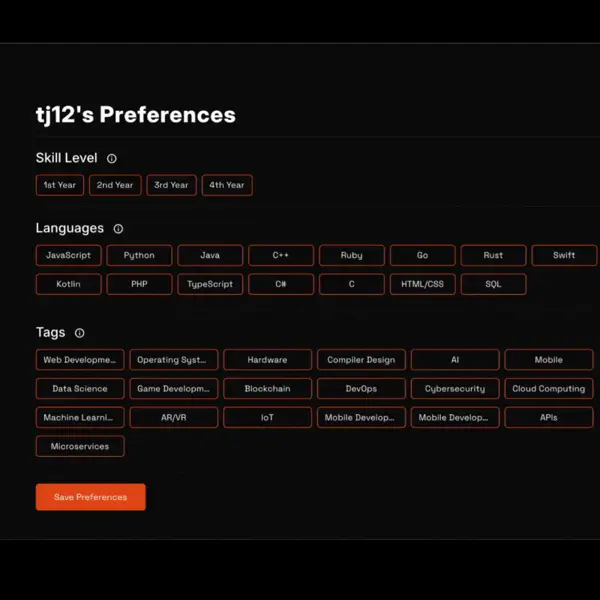
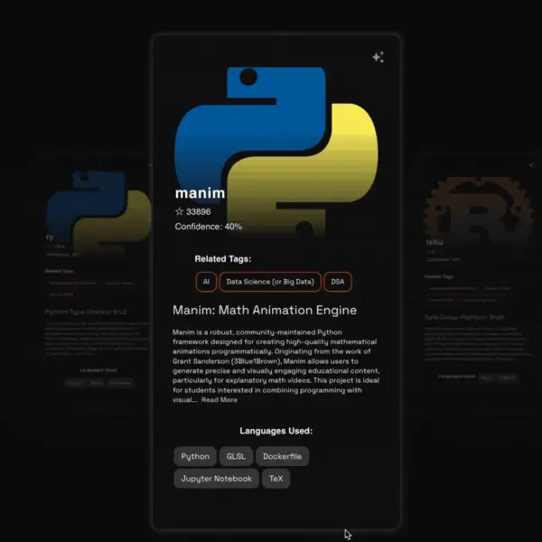
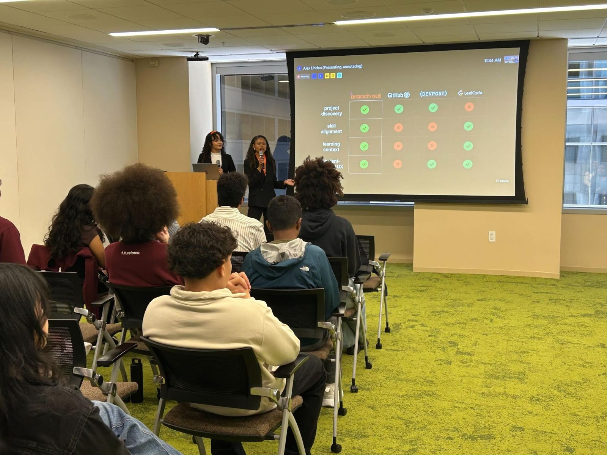

Summer 2025 · Salesforce
Branch Out
Problem statement
A college student who feels intimidated about contributing to open source needs to find a project that fits their level, but GitHub shows the biggest, scariest repos first.
1 of 30picked from 3,000+ applicantsSalesforce Futureforce Tech Launchpad, 2025
3 of 3of us got return offers
How It Went
-
Jun 2025Research
The Problem
Everyone says contribute to open source. Then you open GitHub and the top results are the biggest, scariest repos.
-
Jul 2025Design
Three Questions up Front
Your year, your languages, your interests. Everything after is matched to that.

-
Jul 2025Design
Swipe, Not a List
One repo at a time instead of a wall of results.

-
Jul 2025Tech
AI Summaries
READMEs are written for maintainers. Each repo gets a plain-language summary from Gemini.

-
Aug 2025Tech
Who Did What
I led design and the front end, and did some of the MCP work. Nathan and Jackie owned the back end.
- Design across the app
- Swipe cards, preferences and search
- Keyboard shortcuts for swiping
- Mobile layouts and dark mode
- Some of the MCP work
-
Aug 2025Product
Demo Day
The product worked live, and all three of us got return offers.

Looking Back
- What worked
- Small pull requests. Three people, one product, no chaos.
- What I'd do differently
- We built a lot before testing the swipe with students. I'd test the core idea first.
- What's next
- Point students to a good first issue, not just a repo.